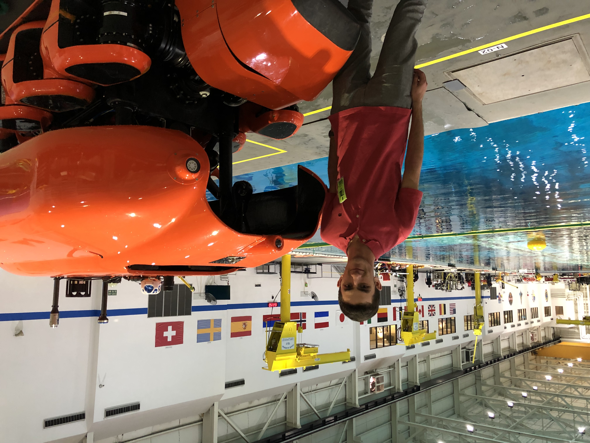
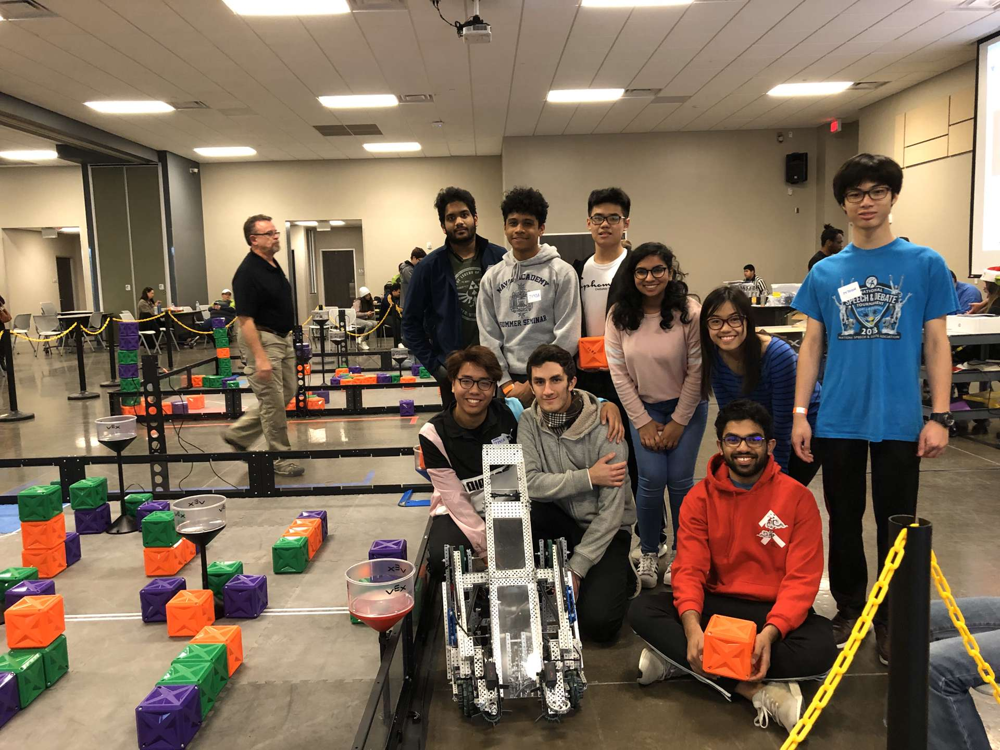

During my internship at Houston Mechatronics (recently renamed to Nauticus Robotics, one of my projects was to make a remote battery charger for the Aquanaut. In the process, I learned both how to work with Docker and ROS. The image below is me (from 2019) next to Aquanaut at NASA's Neutral buoyancy lab.
For another project, in a reasearch paper where I studied the applicability of machine learning, I wrote a convolutional neural network to detect signature authenticity. The paper can be read here. In this process, I learned TensorFlow and polished my skills programming in Python.
In Highschool, I created my highschool's robotics club and led it for two years. Below is a picture from a tournament.
